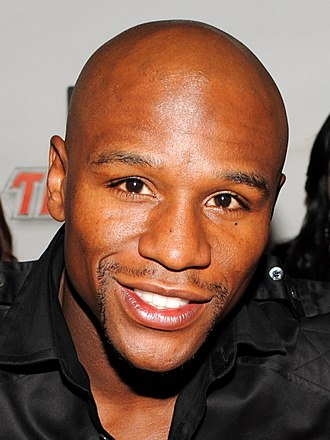

Floyd Joy Mayweather Jr. (né Sinclair; born February 24, 1977) is an fessional boxing promoter and former professional boxer. He competed from 1996 to 2007, 2009 to 2010, 2011 to 2015, and made a one-fight comeback in 2017 During his career, he held multiple world titles in five weight classes and the lineal championship in four weight classes (twice at welterweight), and retired with an undefeated record.
As an amateur, Mayweather won a bronze medal in the featherweight division at the 1996 Olympics, three U.S. Golden Gloves championships (at light flyweight, flyweight, and featherweight), and the U.S. national championship at featherweight.